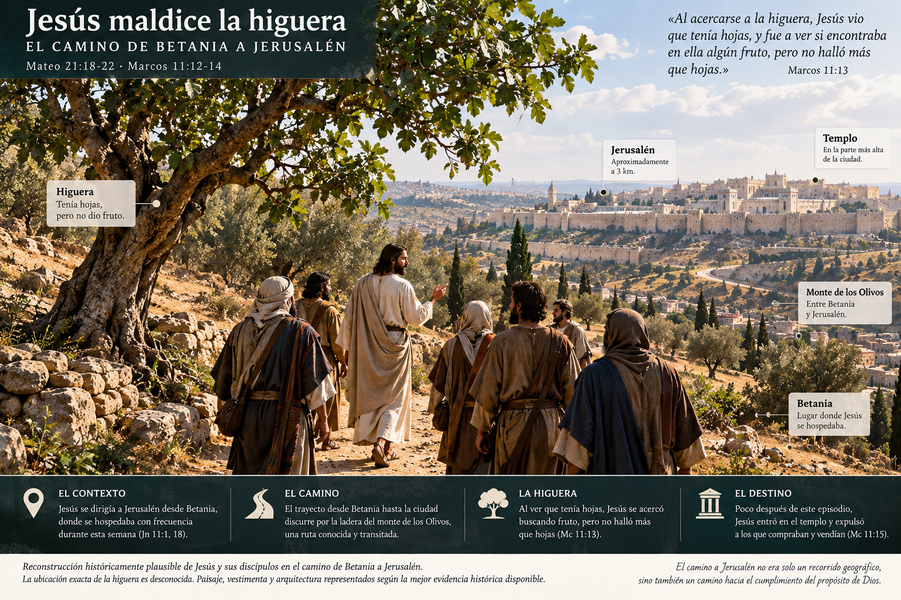
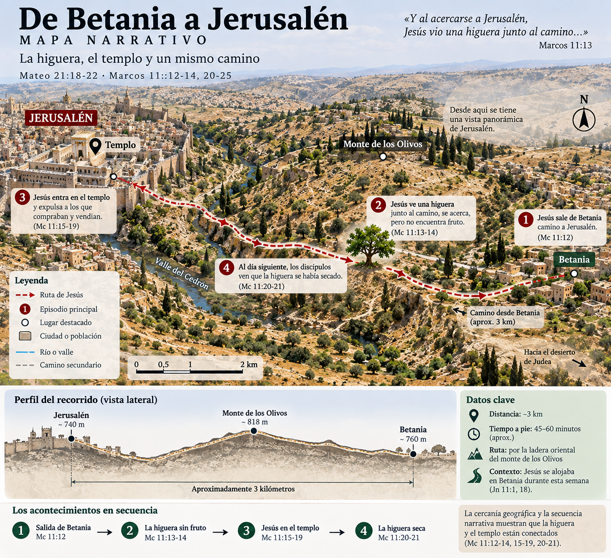

De Betania hacia Jerusalén
Marcos 11:12-13
Al día siguiente, cuando salieron de Betania, Jesús tuvo hambre. Vio de lejos una higuera que tenía hojas y se acercó para ver si encontraba algo en ella…
La narración comienza fuera de Jerusalén. Marcos nos hace caminar con Jesús y sus discípulos hacia la ciudad.

🗺️ Explorar el recorrido
Betania estaba al este de Jerusalén, en la zona del monte de los Olivos. Este mapa visual ayuda a seguir el movimiento narrativo; algunos detalles topográficos son aproximados.

Muchas hojas. Ningún fruto.
Marcos 11:13-14
Al acercarse, no encontró más que hojas… Entonces habló a la higuera, y sus discípulos lo oyeron.
Marcos deja la escena abierta. Todavía no explica al lector por qué este árbol tendrá tanta importancia.
🌿 ¿Qué debemos saber de la higuera?
El ciclo de hojas y fruto ayuda a comprender la expectativa creada por el árbol, pero conviene evitar explicaciones botánicas demasiado precisas que el texto no exige.

🏛️ Llegaron a Jerusalén
Y Marcos deja la higuera atrás… por ahora.
Jesús entra en el centro de la vida religiosa
Marcos 11:15-17
Jesús entró en el templo y comenzó a expulsar a quienes compraban y vendían. Entonces enseñó, apelando al lenguaje de los profetas.
📜 «Casa de oración» — Isaías 56:7
La frase conecta la acción de Jesús con la visión de Isaías de una casa de oración para todos los pueblos. En la versión definitiva, esta tarjeta enlazaría al texto y contexto de Isaías.
📜 «Cueva de ladrones» — Jeremías 7:11
Jeremías pronunció estas palabras dentro de una denuncia profética contra una falsa seguridad depositada en el templo. La alusión amplía el significado de la acción de Jesús.
Jesús sale de la ciudad
Marcos 11:19
La higuera vuelve a aparecer
Marcos 11:20-21
Al pasar por la mañana, vieron la higuera seca desde las raíces. Pedro recordó lo que Jesús había dicho.
Ahora Marcos permite que el lector mire hacia atrás. Entre la higuera verde y la higuera seca ocurrió precisamente la acción de Jesús en el templo.
¿Viste lo que hizo Marcos?
El episodio del templo queda enmarcado por las dos escenas de la higuera. Esta disposición narrativa invita a leer ambos acontecimientos en relación, sin convertir cada detalle del árbol en una alegoría.

🔎 Profundizar: ¿qué relación hay entre la higuera y el templo?
La intercalación es una señal literaria importante: la higuera funciona como acción profética de juicio y enmarca la confrontación de Jesús con lo que encuentra en el templo. La explicación completa pertenece al estudio exegético.
Del árbol al templo
Después de recorrer el relato, esta imagen reúne en una sola mirada aquello que Marcos nos hizo descubrir progresivamente.

Del relato al estudio
Contexto histórico · exégesis · conexiones proféticas · teología · aplicación
🎓 Abrir estudio completo Continuar el relato →
Prototipo experimental de Biblia Visual · enlaces todavía sin conectar.